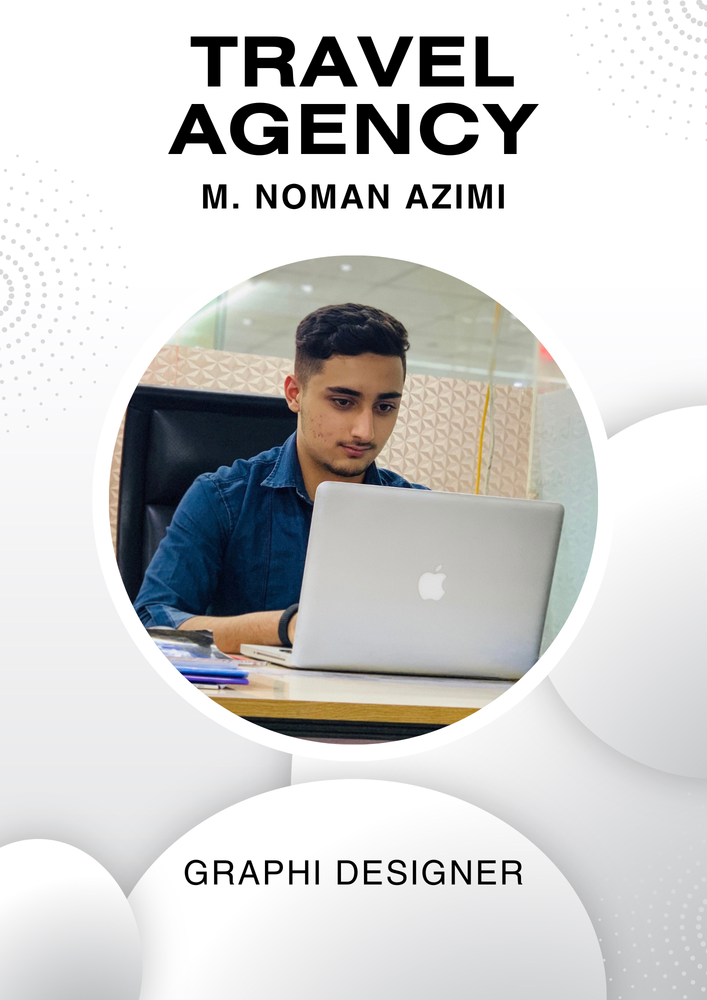

Mohammad Noman Azimi

Summery
Welcome to my portfolio! I am Mohammad Noman Azimi, a web developer and graphic designer.
With a strong background in different youtube channels and social media accounts, I bring specialization and uniqueness on online platforms.
Explore my work to see how I can contribute to your next project.
Education
Work experience
English Instructor
- June 2018 - December 2020
- Muslim Youth Academy Center
- December 2020 - Jun 2022
- Social Media online Marketing
- Social media platforms
- Youtube
- Tiktok
- Instagram
- Facebook
- My CV

Skills
- Customer's Service
- Microsoft office suit
- Social media management
Other